ja-hyun/attack_air_heavy
공중에서 큰 강공격; 지상 발 디딤과 구별
전체 16프레임
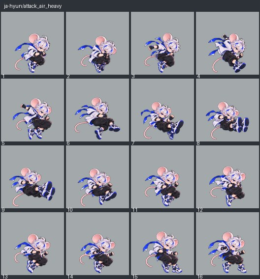
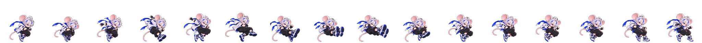
| ja-hyun/attack_heavy_charge | redo | 준비 유지와 방향별 해제 공격이 같은 visual_state_id를 사용한다. 현재 공용 시트만으로 위·아래·옆 타격과 힘모으기를 모두 정확히 표현하지 못한다. |
| ja-hyun/jump | fix | 하강 중 바닥 착지 자세를 유지한다. |
| myo-ryung/attack_heavy_charge | redo | 준비 유지와 방향별 해제 공격이 같은 visual_state_id를 사용한다. 현재 공용 시트만으로 위·아래·옆 타격과 힘모으기를 모두 정확히 표현하지 못한다. |
| myo-ryung/attack_light_combo_01 | fix | 뻗은 앞손은 준비2–5에 있고 적중6·7·9·10에는 손을 회수하거나 대기하여 판정과 손 타격 표현이 어긋난다. |
| myo-ryung/guard | fix | 방어 후반에 앞팔을 내려 일반 대기로 돌아오며 실제 정지16에서 얼굴·몸 앞을 막지 않는다. |
| myo-ryung/jump | fix | 바닥에 양발을 딛고 무릎을 압축한 착지 자세13이 runtime descent 단계에서 약183ms 동안 표시된다. |
| myo-ryung/run | fix | 달리기 루프 마지막4장이 양발을 바닥에 두고 선 대기 자세여서 runtime 매 반복에 약333ms의 멈춤 구간이 생긴다. |
| myo-ryung/special_neutral | fix | 세 차례의 킥 중 첫 타3은 준비, 마지막 타11은 회복에 놓이고 적중6–10은 한 차례 킥만 완성해 연속 킥과 실제 적중 구간이 어긋난다. |
| myo-ryung/ultimate | fix | 포획 띄우기→연속 킥→하강 마무리의 구분이 약하며 하강 마무리 후보11–13이 runtime 회복에 놓인다. |
| nabi/attack_heavy_charge | redo | 준비 유지와 방향별 해제 공격이 같은 visual_state_id를 사용한다. 현재 공용 시트만으로 위·아래·옆 타격과 힘모으기를 모두 정확히 표현하지 못한다. |
| nabi/guard | fix | 방어가 계속되는 상태인데 후반에 손을 내리고 마지막 대기 자세를 고정한다. |
| nabi/hitstun | fix | 맞은 직후 약150ms 동안 정상 대기와 유사하여 최소10tick 경직의 대부분에서 피격이 읽히지 않는다. |
| nabi/jump | fix | 하강 구간이 두 발을 디딘 지상 쪼그림 프레임을 약 183ms 표시한다. |
| nabi/run | fix | 두 차례 뻗기에서 동일한 앞발이 선행하여 반대발 전진과 지지발 교대가 식별되지 않는다. |
| nabi/special_down | redo | 원문은 후퇴 뒤 전진 가드 레이크인데 그림에는 후퇴 체중 이동이 분명하지 않고 구현 데이터도 중립 호환이어서 기준 차이가 있다. |
| nabi/ultimate | fix | 계약의 교차 발톱 연타 뒤 큰 날리기가 한 번의 도약 찌르기와 나란한 양팔 뻗기로 표현되어 순서를 식별하기 어렵다. |
| yu-ran/attack_heavy_charge | redo | 준비 유지와 방향별 해제 공격이 같은 visual_state_id를 사용한다. 현재 공용 시트만으로 위·아래·옆 타격과 힘모으기를 모두 정확히 표현하지 못한다. |
| yu-ran/attack_heavy_up | fix | 위 강공격의 주된 동작이 무릎 상승이며 계약의 꼬리 띄우기가 보이지 않는다. |
| yu-ran/attack_light_combo_02 | fix | 계약은 짧은 꼬리 옆 견제이나 활성 자세는 손을 뻗고 꼬리가 뒤에 머문다. |
| yu-ran/attack_light_combo_03 | fix | 마지막 활성12가 꼬리를 거둔 낮은 회복 자세라 넓은 꼬리 쓸기의 적중 단계와 어긋난다. |
| yu-ran/attack_light_down | fix | 낮은 손 공격이며 계약의 low tail check가 보이지 않는다. |
| yu-ran/attack_light_up | fix | 위로 올린 부위가 앞손이고 꼬리가 뒤에 고정되어 rising tail check와 다르다. |
| yu-ran/jump | fix | 하강 끝13이 두 발을 벌려 몸을 받는 착지 준비/압축으로 보여 공중 하강과 착지가 구분되지 않는다. |
| yu-ran/run | fix | 양쪽 반주기의 긴 보폭에서 같은 앞발·뒷발 배치가 반복되어 좌우 지지발 교대가 명확하지 않다. |
| yu-ran/special_down | fix | 활성 끝9~10에 낮은 꼬리 쓸기 대신 꼬리 회수와 손 모으기가 나온다. |
| yu-ran/special_side | redo | docs/contracts/attack-system-v01.json은 mist-path tail rush를 요구하지만 현재 moveset의 special_side에는 자기 이동이 없고 combat.md는 중립 호환 기술로 명시한다. 그림만 바꿔 돌진이라고 통과시킬 수 없다. |
| yu-ran/special_up | fix | 상승 주먹/무릎 자세가 반복되어 spiral tail vault의 꼬리 나선 도약이 읽히지 않는다. |
| yu-ran/ultimate | fix | 준비 뒤 단일 수평 꼬리 쓸기로 보여 ringed-tail vortex→forward finish의 두 단계가 구별되지 않는다. |
현재 표현 코드를 실행한 60Hz 검토 기록입니다. 비반복 상태는2초 강제 유지, 반복 모션은완전한2주기, 점프는 단계별 속도를 지정한 시험이며 실제 경기의 상태 수명과 구분합니다. 차지는 유지·해제 변형을 따로 선택하세요. 페이지 표시 자체가 QA 통과는 아닙니다.
공중에서 큰 강공격; 지상 발 디딤과 구별


공중에서 빠른 약공격; 지상 발 디딤과 구별
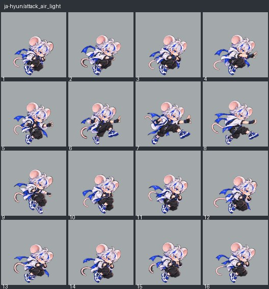
전진 접근하며 큰 강공격
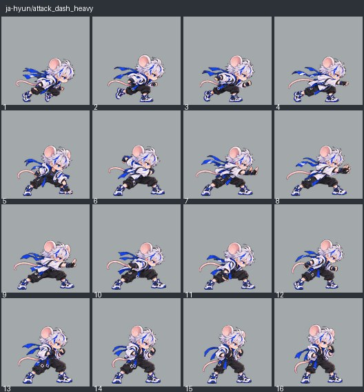
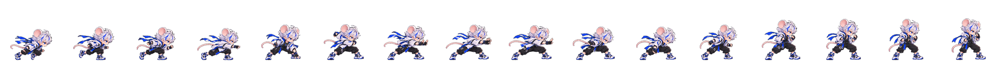
전진 접근하며 빠른 약공격
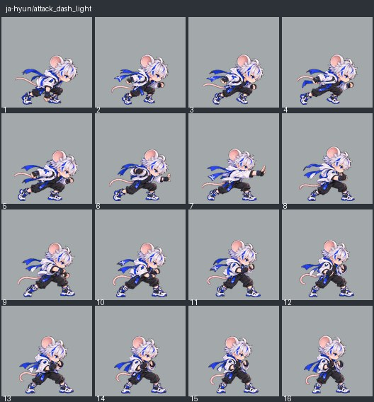
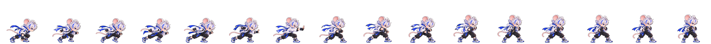
CHARGE 상태의 힘 모으기와 해제 후 강공격에 같은 ID를 사용한다. 두 맥락을 각각 검토
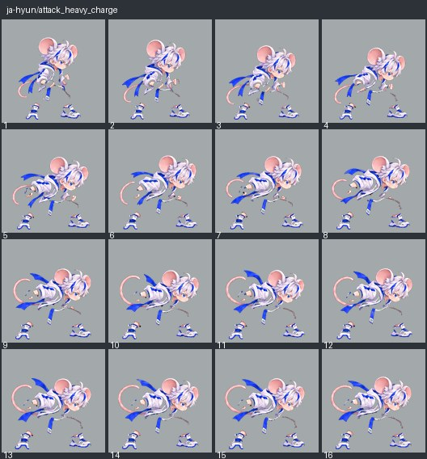
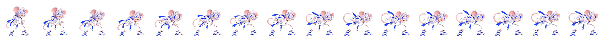
낮은 방향을 향한 강한 타격·회복; up light: short rising strike; up heavy: deep-crouch rising strike; down light: low hand check; down heavy: leg sweep
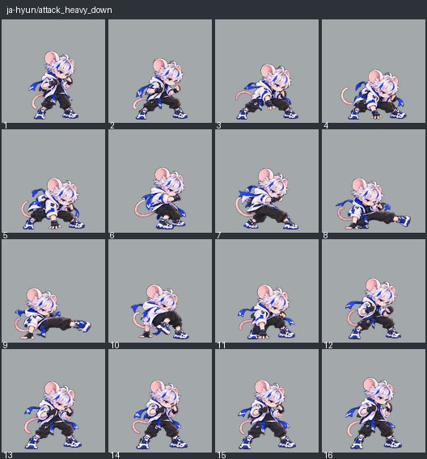
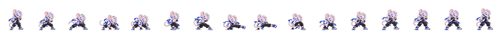
옆 방향의 큰 준비와 강한 타격·회복
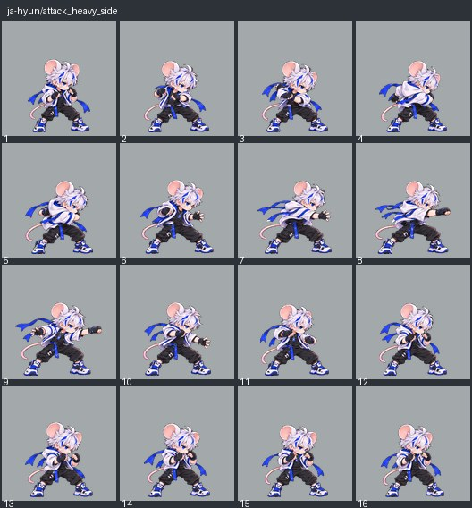
위쪽을 향한 강한 타격·회복; up light: short rising strike; up heavy: deep-crouch rising strike; down light: low hand check; down heavy: leg sweep
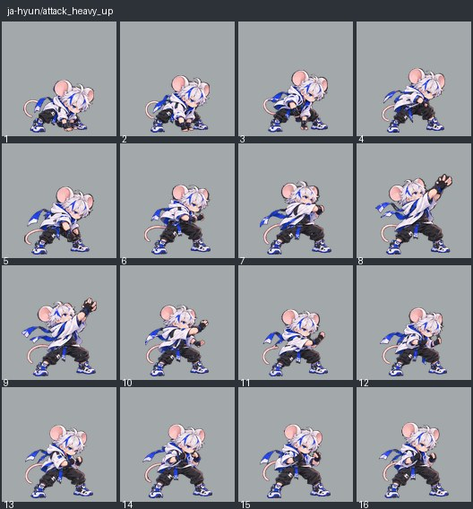
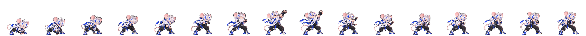
low jab
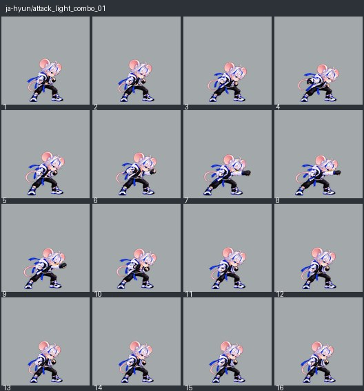
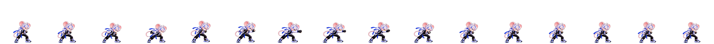
ribbon-drawing side strike
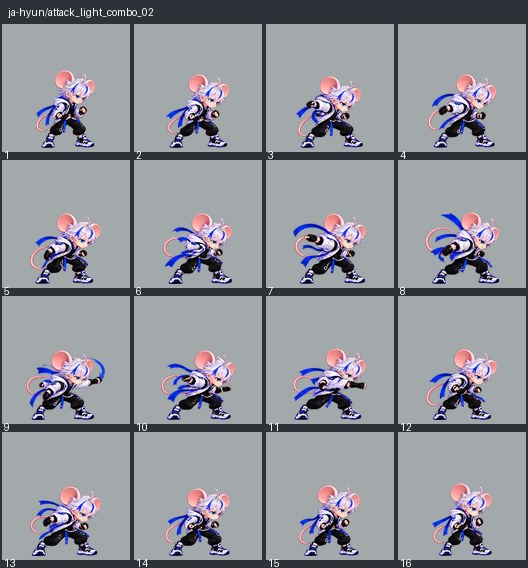
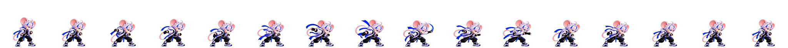
open-arm ribbon spin sweep
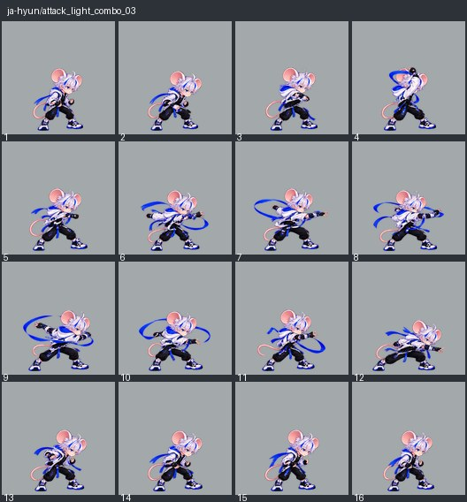
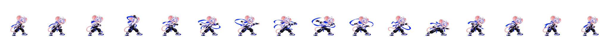
짧고 빠른 아래쪽 약공격; up light: short rising strike; up heavy: deep-crouch rising strike; down light: low hand check; down heavy: leg sweep
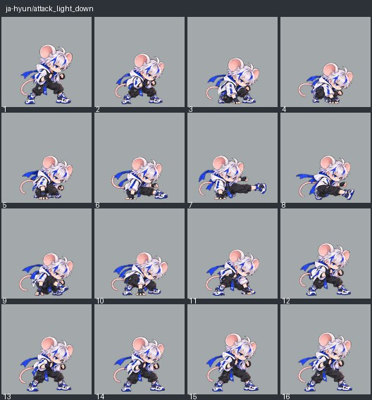
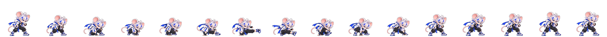
짧고 빠른 위쪽 약공격; up light: short rising strike; up heavy: deep-crouch rising strike; down light: low hand check; down heavy: leg sweep
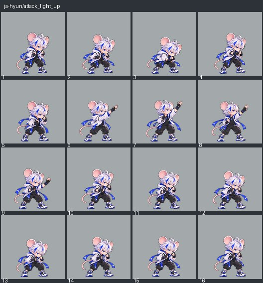
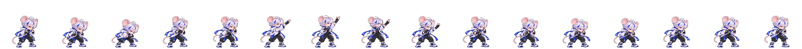
마지막 사망과 끝 자세; 방어·대기와 구별
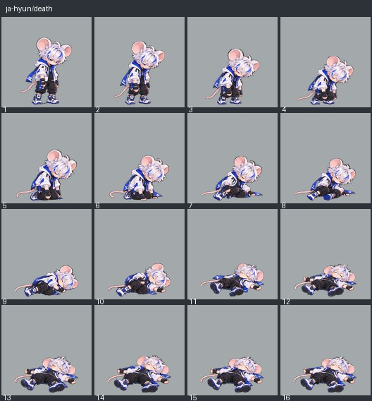
몸을 낮추거나 이동하며 피하기; 달리기·공격과 구별
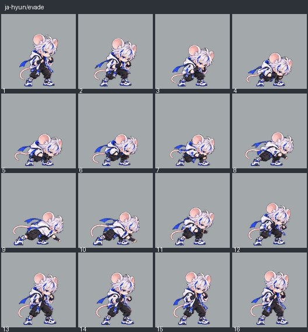
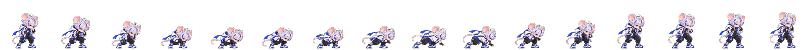
앞을 막는 방어 자세를 만들고 실제 정지 프레임에서도 유지
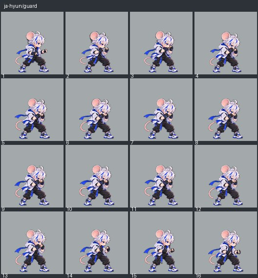
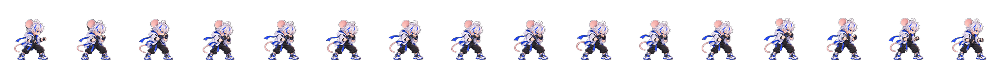
맞은 순간의 반응과 경직; 자발적 공격·방어와 구별
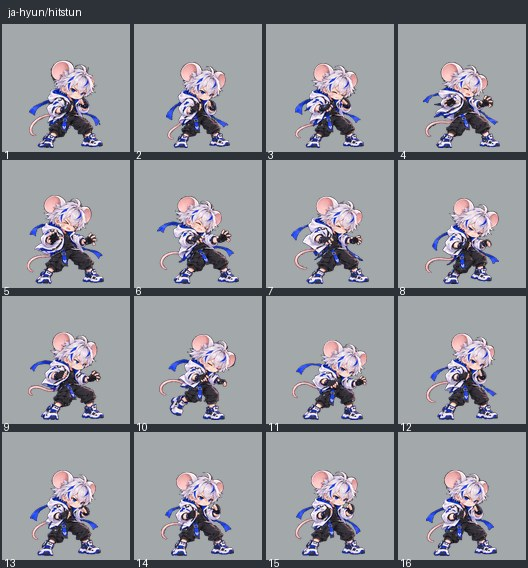
대기 호흡; 이동·공격과 구별되고 자연스럽게 반복
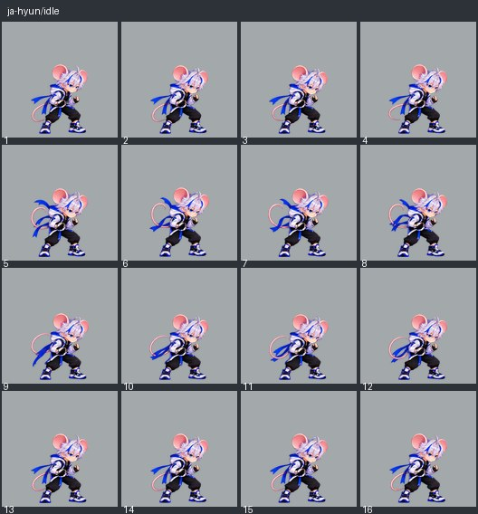
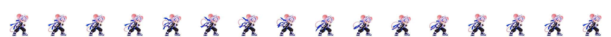
상승→정점→하강→지상 착지; 공중에 착지 자세를 표시하지 않음
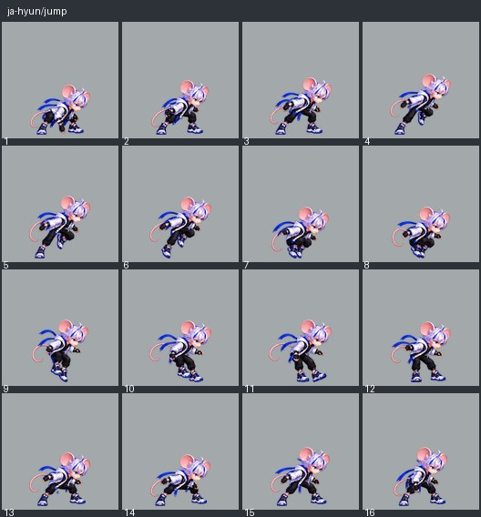
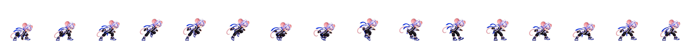
균형을 잃고 바닥에 넘어짐; 일어남과 구별
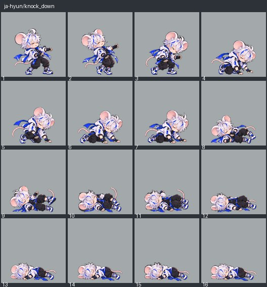
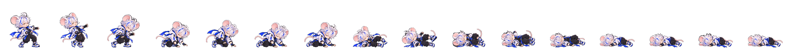
타격으로 공중에 밀려나는 반응; 점프·착지와 구별
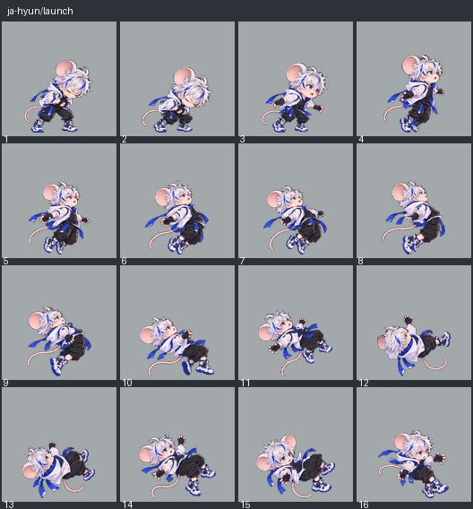
장외 탈락하며 균형을 잃거나 화면 밖으로 떨어짐
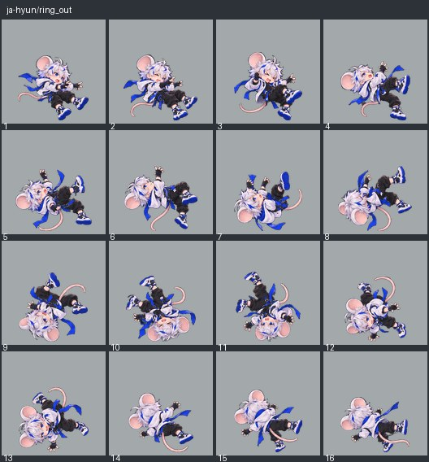
달리기; 발 교대와 몸의 무게 이동, 자연스러운 반복
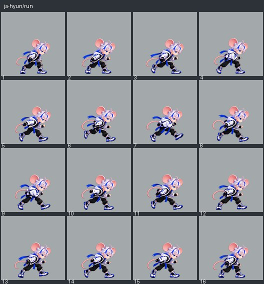
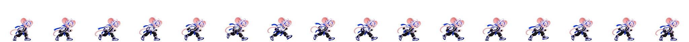
등장해 전투 가능한 자세로 자리 잡음
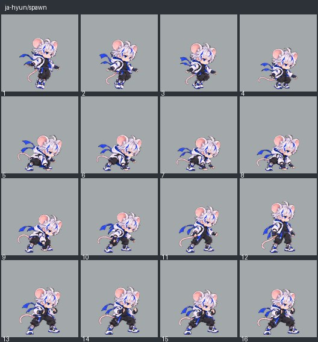
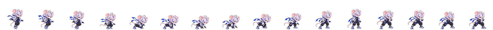
low ribbon arc approach check
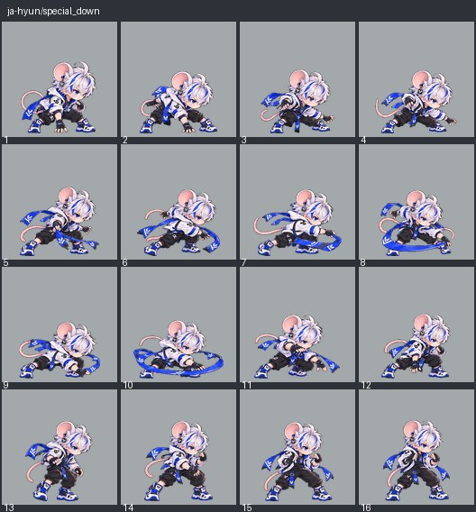
mid-range ribbon reel that draws the opponent closer
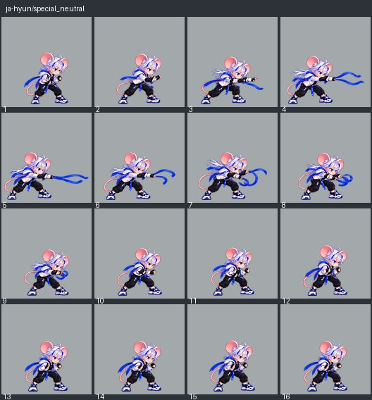
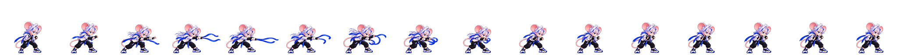
short ribbon rush
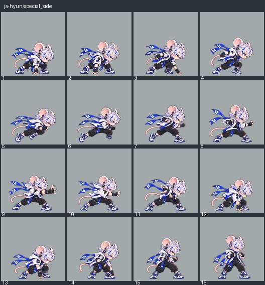
rising spin recovery
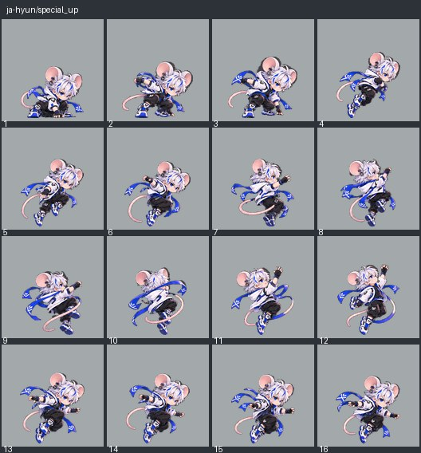
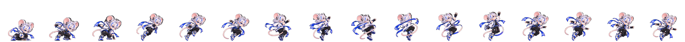
wide ribbon rotation into forward finish
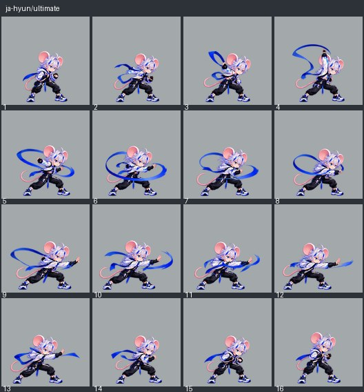
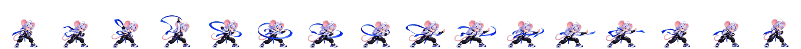
넘어진 자세에서 몸을 일으켜 대기 자세로 복귀
공중에서 큰 강공격; 지상 발 디딤과 구별
공중에서 빠른 약공격; 지상 발 디딤과 구별
전진 접근하며 큰 강공격
전진 접근하며 빠른 약공격
CHARGE 상태의 힘 모으기와 해제 후 강공격에 같은 ID를 사용한다. 두 맥락을 각각 검토
낮은 방향을 향한 강한 타격·회복; up light: fast rising kick; up heavy: leaping kick; down light: low toe check; down heavy: spinning low kick
옆 방향의 큰 준비와 강한 타격·회복
위쪽을 향한 강한 타격·회복; up light: fast rising kick; up heavy: leaping kick; down light: low toe check; down heavy: spinning low kick
short hand strike
rising knee
spinning kick
leaping spin-kick with opened ears and ribbon
짧고 빠른 아래쪽 약공격; up light: fast rising kick; up heavy: leaping kick; down light: low toe check; down heavy: spinning low kick
짧고 빠른 위쪽 약공격; up light: fast rising kick; up heavy: leaping kick; down light: low toe check; down heavy: spinning low kick
마지막 사망과 끝 자세; 방어·대기와 구별
몸을 낮추거나 이동하며 피하기; 달리기·공격과 구별
앞을 막는 방어 자세를 만들고 실제 정지 프레임에서도 유지
맞은 순간의 반응과 경직; 자발적 공격·방어와 구별
대기 호흡; 이동·공격과 구별되고 자연스럽게 반복
상승→정점→하강→지상 착지; 공중에 착지 자세를 표시하지 않음
균형을 잃고 바닥에 넘어짐; 일어남과 구별
타격으로 공중에 밀려나는 반응; 점프·착지와 구별
장외 탈락하며 균형을 잃거나 화면 밖으로 떨어짐
달리기; 발 교대와 몸의 무게 이동, 자연스러운 반복
등장해 전투 가능한 자세로 자리 잡음
delayed stomp; short ground hop or aerial descent
short-range rapid forward kicks
arc jump-kick entry
high Skybound recovery with long end recovery
capture launch, serial kicks, descending finish
넘어진 자세에서 몸을 일으켜 대기 자세로 복귀
공중에서 큰 강공격; 지상 발 디딤과 구별
공중에서 빠른 약공격; 지상 발 디딤과 구별
전진 접근하며 큰 강공격
전진 접근하며 빠른 약공격
CHARGE 상태의 힘 모으기와 해제 후 강공격에 같은 ID를 사용한다. 두 맥락을 각각 검토
낮은 방향을 향한 강한 타격·회복; up light: short upward claw; up heavy: double upward rake; down light: low claw check; down heavy: broad low rake
옆 방향의 큰 준비와 강한 타격·회복
위쪽을 향한 강한 타격·회복; up light: short upward claw; up heavy: double upward rake; down light: low claw check; down heavy: broad low rake
claw jab while off-hand guards
large crossed claw rake
짧고 빠른 아래쪽 약공격; up light: short upward claw; up heavy: double upward rake; down light: low claw check; down heavy: broad low rake
짧고 빠른 위쪽 약공격; up light: short upward claw; up heavy: double upward rake; down light: low claw check; down heavy: broad low rake
마지막 사망과 끝 자세; 방어·대기와 구별
몸을 낮추거나 이동하며 피하기; 달리기·공격과 구별
앞을 막는 방어 자세를 만들고 실제 정지 프레임에서도 유지
맞은 순간의 반응과 경직; 자발적 공격·방어와 구별
대기 호흡; 이동·공격과 구별되고 자연스럽게 반복
상승→정점→하강→지상 착지; 공중에 착지 자세를 표시하지 않음
균형을 잃고 바닥에 넘어짐; 일어남과 구별
타격으로 공중에 밀려나는 반응; 점프·착지와 구별
장외 탈락하며 균형을 잃거나 화면 밖으로 떨어짐
달리기; 발 교대와 몸의 무게 이동, 자연스러운 반복
등장해 전투 가능한 자세로 자리 잡음
step back then forward guard rake; no automatic counter or invulnerability
focused short-range claw blow
low pounce slash entry
short fast rising claw recovery
capture crossed-claw flurry then large launch
넘어진 자세에서 몸을 일으켜 대기 자세로 복귀
공중에서 큰 강공격; 지상 발 디딤과 구별
공중에서 빠른 약공격; 지상 발 디딤과 구별
전진 접근하며 큰 강공격
전진 접근하며 빠른 약공격
CHARGE 상태의 힘 모으기와 해제 후 강공격에 같은 ID를 사용한다. 두 맥락을 각각 검토
낮은 방향을 향한 강한 타격·회복; up light: rising tail check; up heavy: tail launcher; down light: low tail check; down heavy: broad low tail sweep
옆 방향의 큰 준비와 강한 타격·회복
위쪽을 향한 강한 타격·회복; up light: rising tail check; up heavy: tail launcher; down light: low tail check; down heavy: broad low tail sweep
quick hand spacing check
short tail side check
wide ringed-tail sweep
짧고 빠른 아래쪽 약공격; up light: rising tail check; up heavy: tail launcher; down light: low tail check; down heavy: broad low tail sweep
짧고 빠른 위쪽 약공격; up light: rising tail check; up heavy: tail launcher; down light: low tail check; down heavy: broad low tail sweep
마지막 사망과 끝 자세; 방어·대기와 구별
몸을 낮추거나 이동하며 피하기; 달리기·공격과 구별
앞을 막는 방어 자세를 만들고 실제 정지 프레임에서도 유지
맞은 순간의 반응과 경직; 자발적 공격·방어와 구별
대기 호흡; 이동·공격과 구별되고 자연스럽게 반복
상승→정점→하강→지상 착지; 공중에 착지 자세를 표시하지 않음
균형을 잃고 바닥에 넘어짐; 일어남과 구별
타격으로 공중에 밀려나는 반응; 점프·착지와 구별
장외 탈락하며 균형을 잃거나 화면 밖으로 떨어짐
달리기; 발 교대와 몸의 무게 이동, 자연스러운 반복
등장해 전투 가능한 자세로 자리 잡음
low tail brace sweep; no automatic counter or invulnerability
wide one-hit tail sweep that controls front space
mist-path tail rush
spiral tail vault recovery
ringed-tail vortex into forward finish
넘어진 자세에서 몸을 일으켜 대기 자세로 복귀